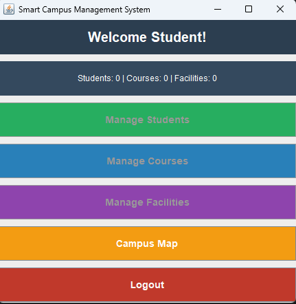
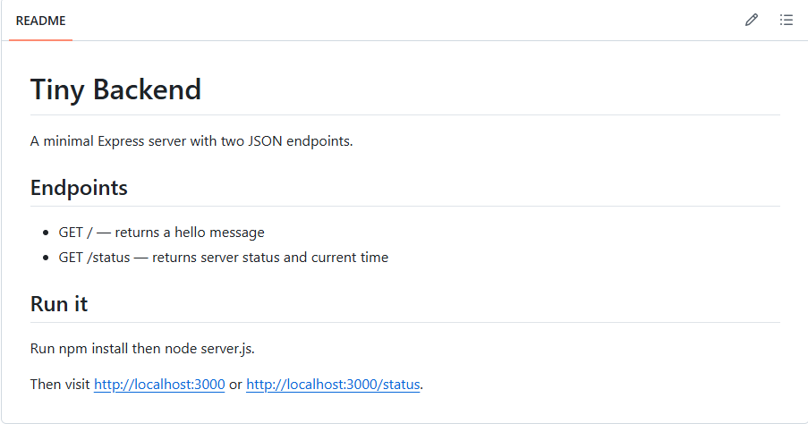

01 / Java · Swing · OOP
Smart Campus Management System
A Java desktop app for managing students, courses, and facilities, with a live map for building status.
Result: A working desktop interface that brings campus records and building status into one place.
Explore case study →
02 / Node.js · Express
Tiny Backend
A small Express API created to practise HTTP routes, JSON responses, and basic backend fundamentals.
Result: A runnable Express API with documented routes and predictable JSON responses.
Explore case study →03 / Usage metering · Quotas · Billing
Usage Metering & Billing Service
A capstone that extends my backend learning into idempotent usage events, quota checks, token-cost computation, and verified Stripe test-mode webhooks.
Result: A backend capstone bringing together event idempotency, quotas, cost computation, and test-mode billing webhooks.
Explore capstone →AIFILES → SUMMARIZE → STUDY
04 / AI workflow · Claude Desktop · Filesystem MCP
Study Notes Summarizer Agent
An AI-assisted workflow that reads study files and turns source material into concise, review-friendly notes, using Claude Desktop with filesystem access through MCP.
Result: A repeatable file-to-summary workflow designed to make revision material quicker to scan and revisit.
Built as an AI Fluency learning project; summaries should still be checked against the original material.